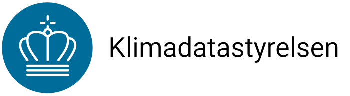

Logo
Demoside med logo findes her. Bemærk! Klimadatastyrelsens logo må kun bruges af Klimadatastyrelsen.
Kom hurtigt i gang med logo fra CDN:
Web component
Du kan bruge <ds-logo> elementet til at vise et logo. Det giver dig adgang til at style og skalere logoet.
Det kræver, at du importerer DSLogoTitle eller DSLogo fra designsystem.js
Derefter kan logo/bomærke og logotypografi sættes op som vist herunder.
SVG-filer (vektor)
Du kan finde SVG-logofiler under ../assets eller fra CDN


PNG-filer (raster)
Du kan finde SVG-logofiler under ../assets eller fra CDN.



Logo i forskellige størrelser
<ds-logo>-elementet skalerer selv i forhold til hvor meget plads, der er.
Du kan bruge classes black/white/transparent til at vise forskellige varianter af logoet.
Favicon/bogmærkeikon
Som favicon bruges logo-small.svg
For at bruge det skal du indsætte denne linie i HTML <head> sektionen. Sørg for at PATH svarer til logofilens placering på serveren.
Du kan også hente favicon direkte fra CDN, som vist her:
<link rel="icon" href="PATH/logo-small.svg">
Denne fil følger med i @dataforsyningen/designsystem pakken under
/assets/logo-small.svg
Custom logo
Logo kan styles med andre farver, hvis der er behov for det.